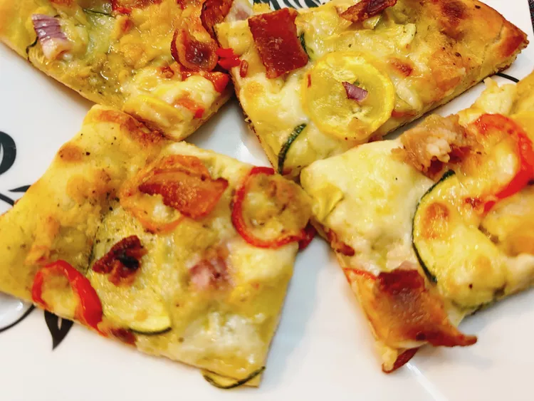

Summer Pizza

Description
This summer pizza is loaded with fresh veggies, light on the cheese,
and is made on the grill. The butter glaze makes a nice finish,
but you can skip it if you like.
Ingredients:
- 1 pound pizza dough
- 1⁄4 cup pesto
- 1⁄3 cup shredded quesadilla cheese
- 10 thin slices zucchini
- 10 thin slices summer squash
- 2 mini bell peppers, thinly sliced
- 1 thin slice red onion, diced
- 1 strip cooked bacon, chopped
-
OPTIONAL:1 tablespoon butter + 1 teaspoon Brazilian steak
seasoning, or any seasoning you like
Steps:
-
Preheat a gas grill with all burners on High for 10 to 15
minutes. Shape pizza dough into a circle.
-
Reduce the flame on half of the grill burners to Low, to create
areas of direct and indirect heat.
-
Carefully place dough onto the grill over direct heat.
Close the cover. Let dough grill until the bottom is just barely
cooked and shows char marks, 1 to 3 minutes.
-
Use tongs to flip pizza dough over; move to the indirect heat.
Brush dough with pesto. Sprinkle with cheese. Scatter on
zucchini, summer squash, bell pepper, red onion, and bacon.
-
Grill until cheese is melted, about 3 minutes.
Carefully remove pizza from the grill.
-
OPTIONAL: Brush crust edges with butter glaze and place pizza
under the oven broiler, until golden.
Go back to main page